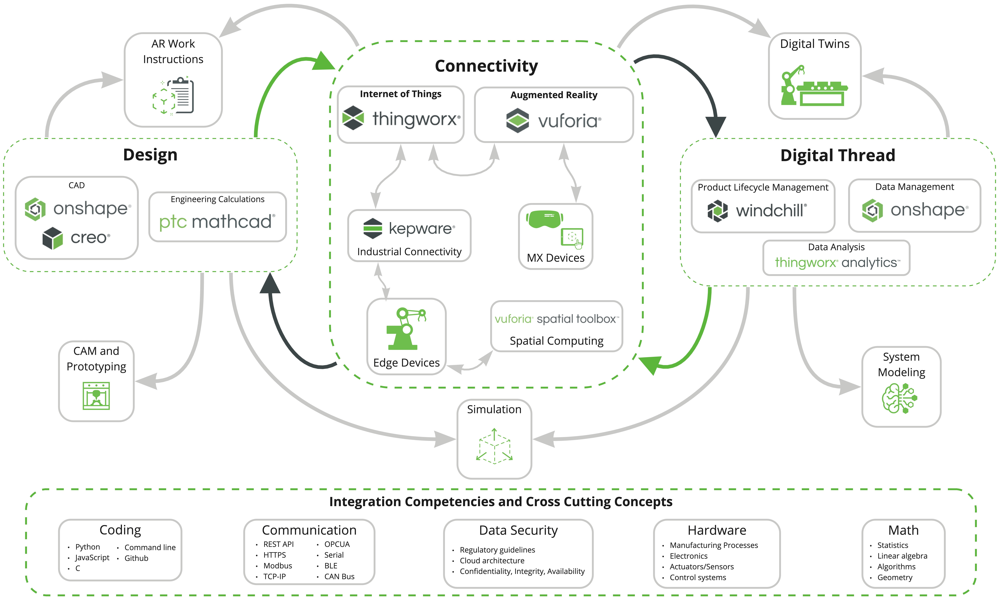

Digital Transformation in Education
Digital Transformation is a strategy being used by industry to solve problems with smart, connected technologies. PTC Education works to bring these industry ready technologies to researchers and teachers around the world. Below is a map that aims to show how the various kinds of technologies work together to connect all of the product development processes.

Click on an item below to get started with PTC technologies, learn about various integrations, or see how thought leaders are bringing digital transformation to education.